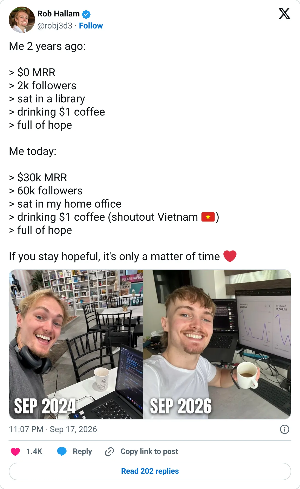
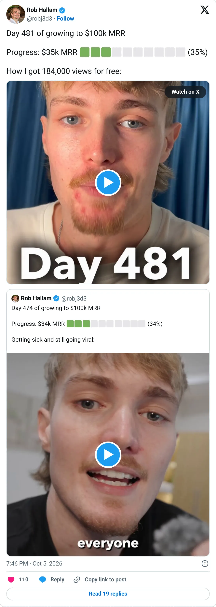

Not a pick
SuperX
The ledger looks real. It is not one of the clearer things to start next.
$22.1K MRR
Should you build this
The money looks real, and it is still not a recommendation to start a copy. SuperX's own TrustMRR number is $22,111 MRR. The founder's posts around it say $30K MRR “across his products” and, on day 481 of a $100K goal, $35K MRR for all products combined. Blended tweets are how a portfolio sounds bigger than any one product. They are also much smaller than the $1M portfolio claim attached to Outrank. This row is the verified product. It holds. Don't add the siblings back in by tweet.
Cited from the captured posts, shown below: the earliest captured post (Sep 17, 2026) is the source for “Founder: "2 years ago $0 MRR… today $30K MRR" (across his products)”; the latest milestone (Oct 5, 2026) is the source for “Founder: "Day 481 of growing to $100K MRR: $35K MRR" (all products combined)”.
Posts this is based on

Founder: "2 years ago $0 MRR… today $30K MRR" (across his products)
Open on X

Founder: "Day 481 of growing to $100K MRR: $35K MRR" (all products combined)
Open on X
What the product is
Chrome extension and analytics for growing an audience on X. Founded Aug 2025 by a UK-born founder based in Vietnam (listed in France). TrustMRR shows 523 subscriptions.
Public trail
- $9.9KVerified revenue in Oct 2025 (first month tracked) source
- $16.6KVerified revenue in Dec 2025 source
- $28.5KVerified revenue in Jan 2026 source
- $30.4KVerified revenue in Feb 2026 (peak month) source
- $23.6KVerified revenue in Mar 2026 source
- $20KVerified revenue in Apr 2026 source
- $18.2KVerified revenue in Jun 2026 source
- $23.9KVerified revenue in Jul 2026 source
- $19.6KVerified revenue in Aug 2026 source
- •Founder: "2 years ago $0 MRR… today $30K MRR" (across his products) source
- $20.8KVerified revenue in Sep 2026 (latest full month) source
- •Founder: "Day 481 of growing to $100K MRR: $35K MRR" (all products combined) source